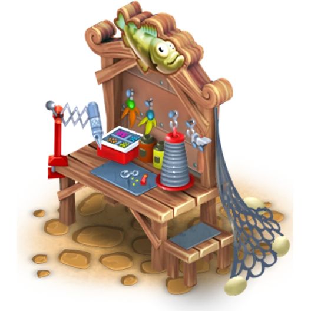

The Lure Workbench is a production building unlocked at experience level 27. It allows players to craft various lures used in fishing.
Gold Lure
Level 27
⏱ 30 min
⭐⭐⭐ 25 min
⭐⭐⭐ 25 min
⭐ 5
Purple Lure
Level 27
⏱ 45 min
⭐⭐⭐ 38 min
⭐⭐⭐ 38 min
⭐ 3
Blue Lure
Level 27
⏱ 1 h
⭐⭐⭐ 51 min
⭐⭐⭐ 51 min
⭐ 4
Green Lure
Level 27
⏱ 1 h 15 min
⭐⭐⭐ 1 h 3 min
⭐⭐⭐ 1 h 3 min
⭐ 4
Red Lure
Level 27
⏱ 1 h 30 min
⭐⭐⭐ 1 h 16 min
⭐⭐⭐ 1 h 16 min
⭐ 5